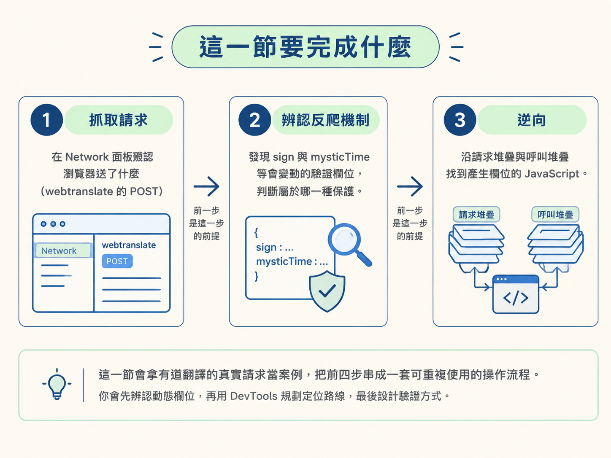
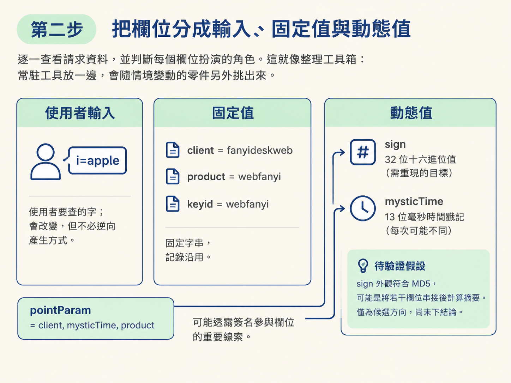
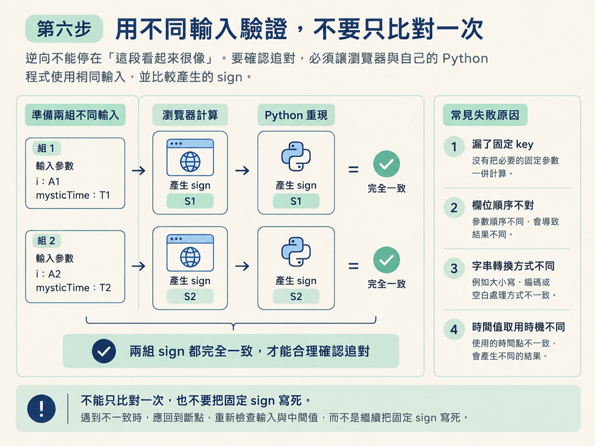

這一節會拿有道翻譯的真實請求當案例，把前四步串成一套可重複使用的操作流程。你會先辨認動態欄位，再用 DevTools 規劃定位路線，最後設計驗證方式。

整體流程可以先看成三段：先抓取請求，確認瀏覽器送了什麼；遇到會變動的驗證欄位時，判斷它屬於哪一種反爬機制；接著才進入逆向，沿著請求堆疊與呼叫堆疊找到產生欄位的 JavaScript。
前置條件：你已完成 Step 1 到 Step 4，知道請求資料、請求頭與 Cookie 的位置，也能使用請求堆疊追蹤、全站關鍵字搜尋，以及行斷點、事件監聽斷點和 XHR 斷點。
這裡使用的是保存下來的請求，因此重點不是立刻算出完整簽名公式，而是先把每一步要找什麼、該用哪個工具，以及如何確認結果規劃清楚。
下面是重放請求的核心程式。它以 POST 傳送到 https://dict.youdao.com/webtranslate，內容型別是 application/x-www-form-urlencoded。也就是說，欄位會以「&」串接，而不是包成 JSON。
wd = "apple"
data = {
'i': wd,
'from': 'auto',
'to': '',
'domain': '0',
'dictResult': 'true',
'keyid': 'webfanyi',
'sign': '1be3315fc3cd8097a033646862b6e5db',
'client': 'fanyideskweb',
'product': 'webfanyi',
'appVersion': '1.0.0',
'vendor': 'web',
'pointParam': 'client,mysticTime,product',
'mysticTime': '1704288976618',
'keyfrom': 'fanyi.web',
'mid': '1',
'screen': '1',
'model': '1',
'network': 'wifi',
'abtest': '0',
'yduuid': 'abcdefg',
}
response = requests.post('https://dict.youdao.com/webtranslate', cookies=cookies, headers=headers, data=data)這份程式已經填入一組現成的 sign，所以它看起來可以直接送出請求。但這只是把答案抄進去，還沒有解決逆向的核心問題：瀏覽器究竟如何產生 sign？
如果把簽名固定寫死，查詢內容或時間改變後，請求就可能失效。因此，現在先不要鑽進壓縮過的 JavaScript。第一個動作是把欄位分類，找出真正需要重現的目標。
逐一查看請求資料，並判斷每個欄位扮演的角色。這就像整理工具箱：常駐工具放一邊，會隨情境變動的零件另外挑出來。
| 欄位 | 範例值 | 性質 |
|---|---|---|
i | apple | 使用者要查的字；會改變，但不必逆向產生方式 |
sign | 1be3315fc3cd8097a033646862b6e5db | 32 位十六進位值，是需要重現的目標 |
mysticTime | 1704288976618 | 毫秒時間戳記，每次可能不同，需要重現 |
client | fanyideskweb | 固定字串 |
product | webfanyi | 固定字串 |
keyid | webfanyi | 固定字串 |
pointParam | client,mysticTime,product | 可能透露簽名參與欄位的重要線索 |
先觀察 sign。它由 32 個十六進位字元組成，外觀符合 MD5 這類摘要演算法常見的輸出格式。因此，可以先提出一個待驗證的假設：網站可能把若干欄位串接，再計算摘要。
這裡只能把 MD5 當成候選方向，不能只看長度就直接下結論。真正的演算法仍要透過 JavaScript 與實際輸出確認。
接著看 mysticTime。它是十三位數字，符合毫秒時間戳記的特徵，也會隨時間改變。這種欄位若被簽名使用，就不能長期固定寫死。
pointParam 則是一條很醒目的線索。它的值直接列出 client、mysticTime 與 product。因此，接下來可以優先尋找一段把這些欄位組合起來，可能再加入固定 key，最後產生摘要的程式。

目標欄位確定後，下一步是選擇入口。這個案例同時具備請求、欄位名稱與演算法特徵，因此適合採用「關鍵字搜尋優先，請求堆疊補位」的順序。
webtranslate 的 POST，確認請求資料裡確實包含 sign 與 mysticTime。pointParam、mysticTime、sign、webtranslate 與 md5。sign 太常見，可能出現大量結果；pointParam 比較少見，通常更容易縮小範圍。webtranslate 請求的發送來源或請求堆疊，跳到送出請求的 JavaScript，再往上追查參數的組裝位置。什麼時候適合搜尋？當你手上有少見的欄位名、API 路徑或演算法名稱時，搜尋通常最快。
什麼時候不該只靠搜尋？如果程式經過打包、變數改名，或欄位名稱是執行時才組合出來的，搜尋可能沒有結果。這時不要繼續盲猜關鍵字，直接沿請求堆疊回到發送位置會更可靠。
找到候選程式後，接著使用斷點攔住執行流程。這個值會隨 XHR 請求送出，因此可以先為 /webtranslate 設定 XHR 斷點。
/webtranslate。client、mysticTime、product，並產生最後的 sign。這個方法適合「知道是哪個請求，但不知道參數在哪裡產生」的情況。它會先在出口架一道攔截網，再沿著呼叫鏈回頭找上游。
如果搜尋已經找到明確的 sign = ... 賦值位置，也可以直接設行斷點。這種方式停得更準，但前提是你已經掌握正確位置。若候選程式很多，XHR 斷點通常比較省力。
程式停下來後，不要只盯著目前這一行。發送請求的函式可能只是把整理好的資料送出去，真正產生簽名的程式通常藏在更上游。
依序切換 Call Stack 裡的函式，觀察各層的區域變數。你的目標是找到資料發生關鍵變化的那一層：原本分開的 client、mysticTime、product，在那裡被組合、加工，最後變成 32 位十六進位的 sign。
找到這一層後，記下函式、輸入值、固定字串與輸出值。這些才是後續用 Python 重現時真正需要搬走的部分。周邊的介面操作、畫面更新與其他無關程式，不必一起抄回去。
逆向不能停在「這段看起來很像」。要確認追對，必須讓瀏覽器與自己的 Python 程式使用相同輸入，並比較產生的 sign。
i 與 mysticTime。sign。sign 都完全一致，才能合理確認簽名邏輯已經追對。如果只有原始範例吻合，換一組資料就失敗，常見原因是漏了固定 key、欄位順序不對、字串轉換方式不同，或時間值取用的時機不同。這時應回到斷點，重新檢查輸入與中間值，而不是繼續把固定 sign 寫死。

完成這套流程後，你手上應該有一份可執行的定位計畫：
sign 與 mysticTime。sign 是 32 位十六進位值，可以把 MD5 當成待驗證的候選方向。pointParam 提示 client、mysticTime、product 可能參與簽名。pointParam、mysticTime、sign、webtranslate 與 md5。webtranslate 的請求堆疊回追。sign。做到這裡，代表你已經能把「抓取請求 → 辨認反爬欄位 → 逆向產生邏輯 → 重算驗證」串成完整程序。真正的簽名公式如何還原，會留給後續案例繼續處理。
面對被保護的真實請求，不要一開始就跳進整包 JavaScript。先看 Network，把欄位分成使用者輸入、固定值與動態值；接著利用pointParam這類少見線索搜尋程式。搜尋不到時，再沿webtranslate的請求堆疊回追。用 XHR 或行斷點停住執行後，從 Call Stack 找到產生sign的函式。最後用不同輸入重算並比對，確認你找到的是規則，而不是剛好能用一次的答案。